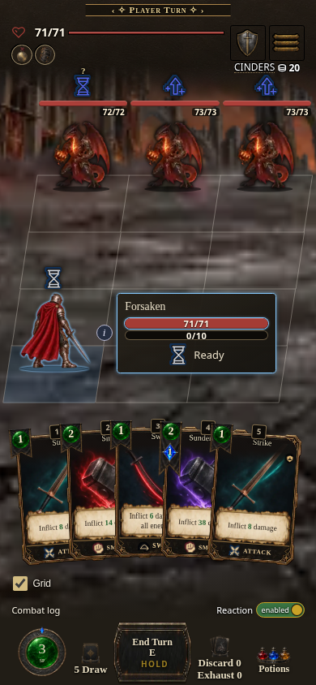
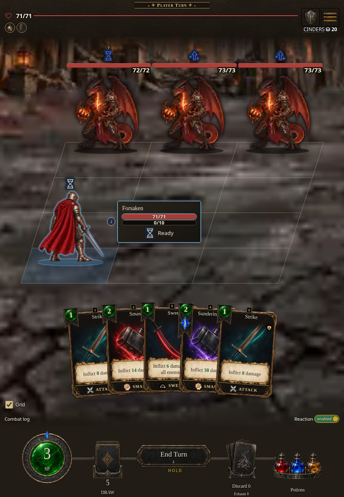
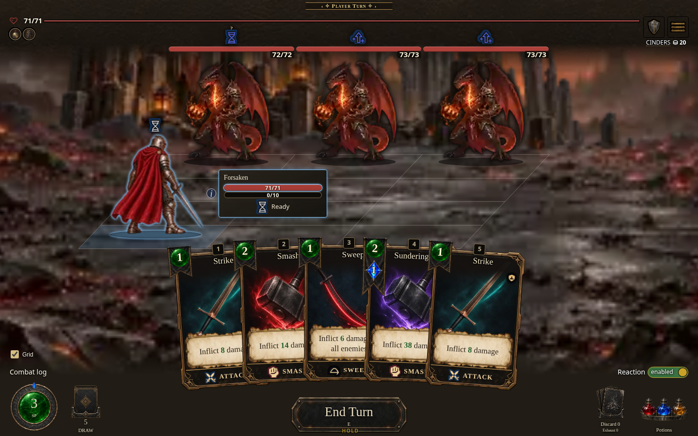
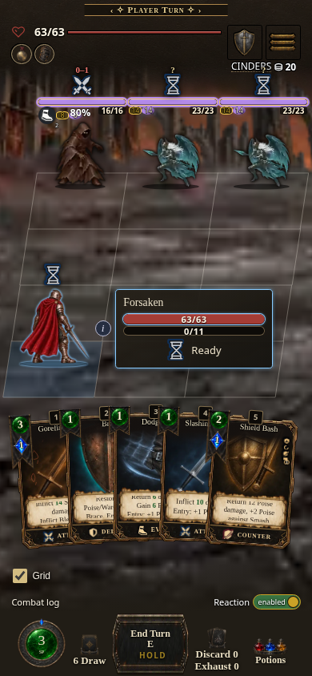
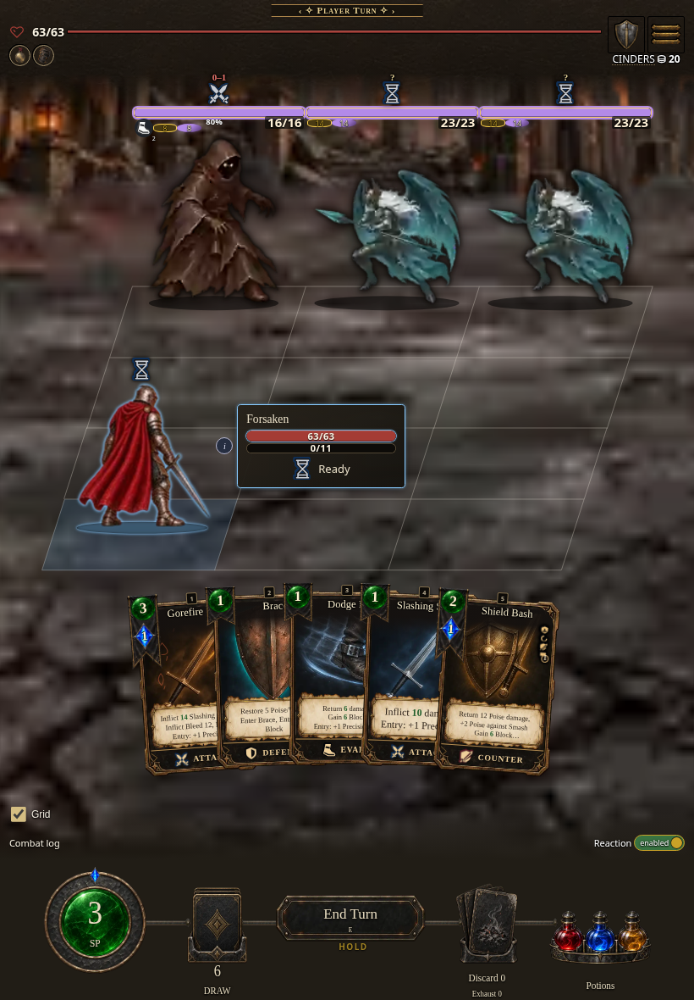
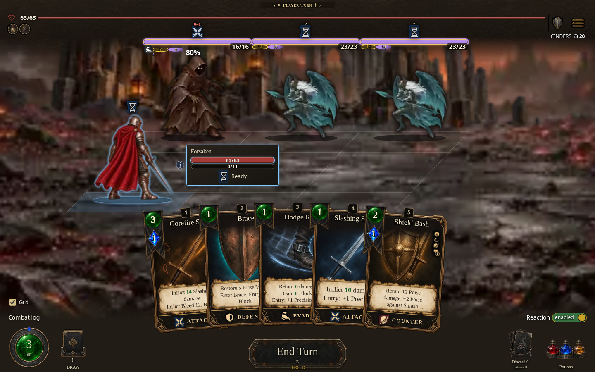

AshenSpire · implemented responsive combat
Native preview screenshots · phone, tablet, desktop · selected-player HUD
Core
Phone · 390 × 844
Tablet · 820 × 1180
Desktop · 1440 × 900
Current
Phone · 390 × 844
Tablet · 820 × 1180
Desktop · 1440 × 900